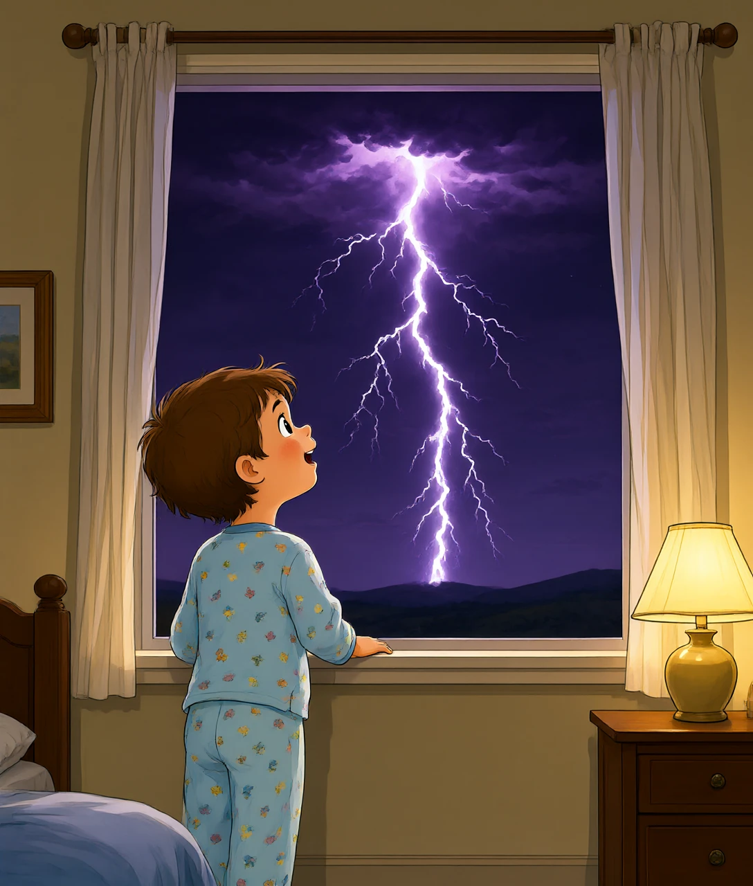
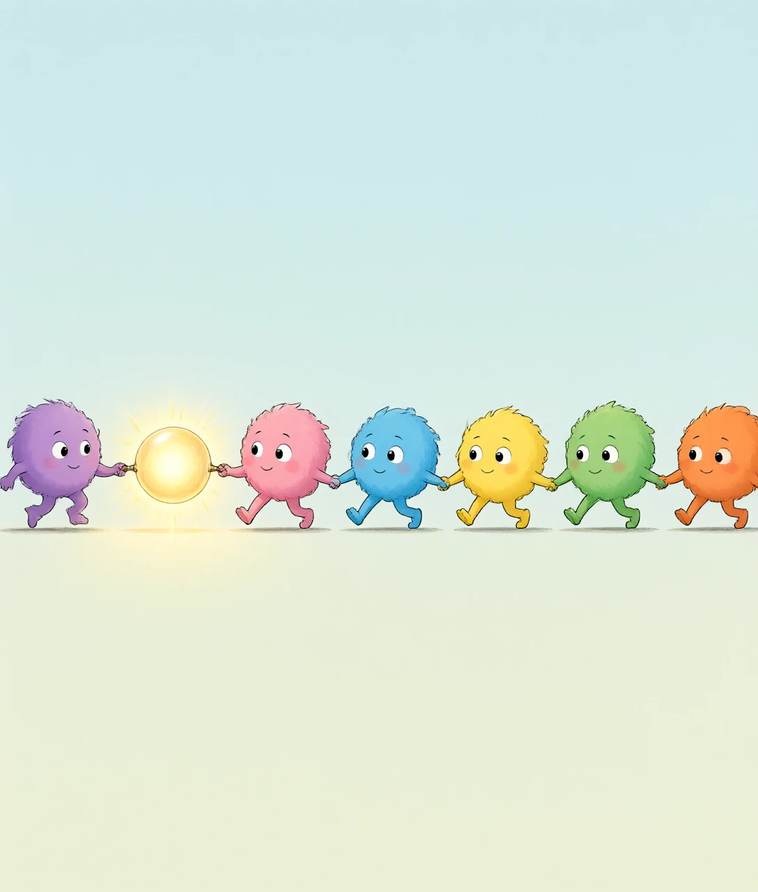
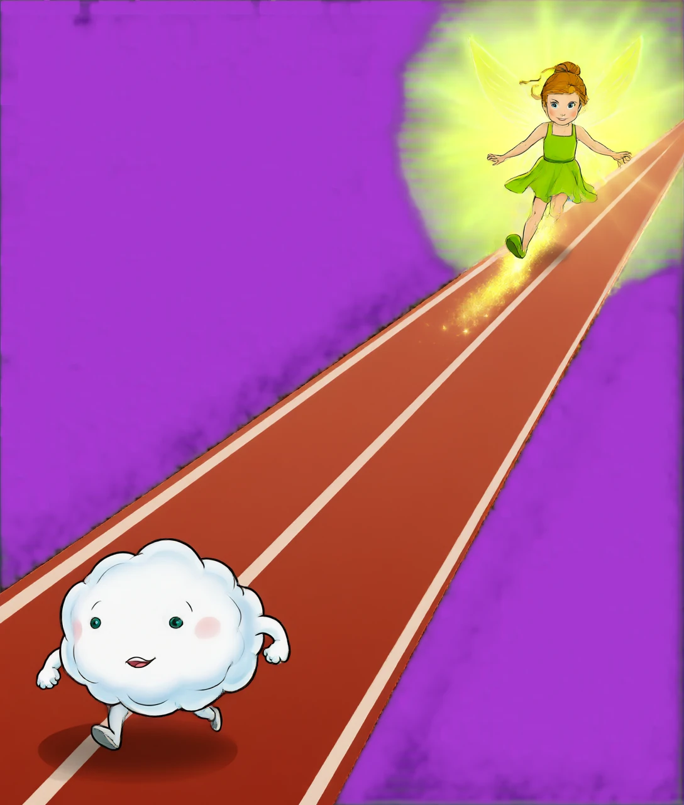
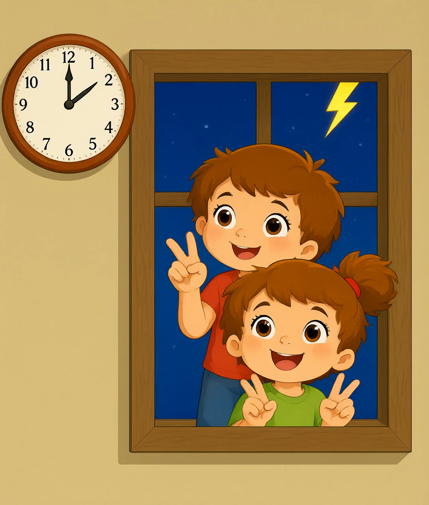
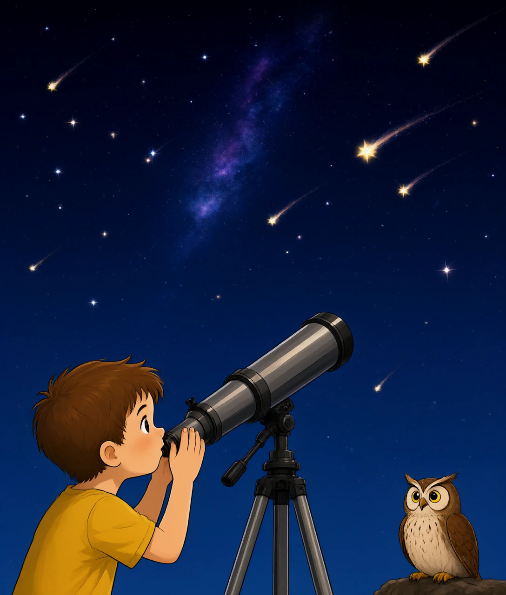

一道闪电引发的光速与声速大赛——还能顺手量出乌云离你多远

雷雨天的夜晚，天边「咔嚓」一道白光，然后你开始数数：一秒、两秒、三秒……「轰隆」——雷声这才慢吞吞地赶到。奇怪了，闪电和雷声明明是同一件事（上次我们说过，雷就是闪电的爆炸声），为什么总是一个先到、一个迟到？
因为它们雇了两个速度天差地别的「快递员」。闪电的光是一名宇宙飞毛腿，每秒跑 30 万公里——绕地球七圈半只用一秒。雷声的搬运工是空气，每秒只走 340 米——跑完 1 公里要将近 3 秒。从乌云到你家窗口这段路，光「啪」一下就到了，声音却要吭哧吭哧跑上好几秒。你数的不是雷的脾气，是声音在路上花掉的时间。
那为什么不干脆让声音也跑快点？这就得往最底层问了：速度不是想快就能快的，它由传递的方式决定。
人类历史上所有声音都跑不过光，但「看得见的雷」真有——如果闪电离你超过 20 公里，雷声在半路就被空气磨没了，只剩下光。这就是夏天傍晚常见的「干闪电」：天边无声地闪，却怎么也听不到雷。
声音的本质是空气分子的接力赛。闪电炸开时，猛推了身边第一排空气分子一把，这些分子挤到第二排，第二排挤第三排……就像教室里传纸条，一张一张往前递，最后递到你耳朵里。声音根本没有自己「跑」，它只是这个「挤」的动作在往前传。
那这个接力能传多快？往底层钻一层：接力速度取决于分子自己跑得有多快、撞得有多勤。常温下空气分子本来就以每秒约 500 米的速度四处乱撞，声波是搭在这团乱撞之上的「波动」，所以声速落在每秒 340 米这个量级——它被空气的「弹性」和「密度」锁死了，谁也改不了。夏天空气分子更活跃，声速会略微变快；冬天则略慢，但都逃不出每秒 300 多米这个圈。
这也顺便解释了一件事：为什么不同的材料里声速不一样。水里分子挤得更紧、弹性更足，声速约 1500 米/秒；钢铁里更夸张，能到 5000 多米/秒——所以把耳朵贴在铁轨上听火车，比隔着空气早听到好几秒。传纸条的队伍排得越紧、传得越起劲，消息就走得越快。

把耳朵贴在铁轨上能提前听到火车，是真的！钢铁里的声速（约 5200 m/s）是空气里的 15 倍。老铁路工人真用这招判断远处有没有车。不过现代铁路危险，千万别试——「早知道火车来」和「来不及跑」是同一件事。
再看另一个快递员。光不是分子接力——它根本不需要队员。光是电磁波，自己就是场在空间里的振荡，不需要空气、水、钢铁当「接力棒」。更重要的是：光速是宇宙的最高限速，每秒 299792458 米，宇宙里没有任何东西能超过它。
所以从闪电到你眼睛这段十几公里的路，光只花万分之几秒——比你眨一次眼快一百多倍。对人眼来说，这个时间四舍五入等于零，光=即时到达。这就是为什么你看到的闪电，永远是「现在时」的闪电。
再钻一层：为什么光可以这么霸道？因为它不需要介质意味着两件事——第一，没有「分子接力」的速度天花板；第二，连真空都拦不住它。这带来一个惊人的推论：太阳离地球 1.5 亿公里，阳光 8 分钟就到；但如果太阳「爆炸有声音」，你永远听不到——声音在太空里连第一排队员都找不到（真空没有空气分子），一个字都传不出来。电影里太空飞船爆炸「轰」一声巨响，全是骗人的，真实的宇宙是安静的。

光快到什么程度？从闪电到你眼睛，十万分之一秒；从月亮到你，1.3 秒；从太阳到你，8 分钟；从离我们最近的恒星比邻星到你，4.2 年。抬头看到的星空，其实全是「过去时」——有些星星的光出发时，恐龙还没灭绝呢。
现在把两个快递员的差距变成超能力。光算零秒到，那么「看到闪电 → 听到雷声」的间隔，几乎全是声音在赶路。声音每秒 340 米，每 3 秒就是 1000 米出头——所以有个口诀：
数出来的秒数 ÷ 3 ≈ 雷区离你的公里数
亲测好用：看到闪电心里默数，数到 9 秒听到雷，9÷3=3，风暴中心离你约 3 公里；数到 3 秒就炸雷，只有 1 公里——它已经在头顶了！还有一个更关键的用法：如果闪电和雷声几乎同时到达（间隔小于 1 秒），说明雷暴就在你附近 300 米内，别数了，赶紧进屋。
这个方法反过来还能「直播」风暴的动向：每次闪电都记一下秒数，数字越来越小 = 风暴在逼近；越来越大 = 它在走远。古人没雷达，靠的就是这招。本质上是：光速给你发了「事件发生」的通知，声速的延迟时间就是一把尺子。慢的那个快递员，反而成了测量员。

为什么雷声是「轰隆隆」而不是「砰」一声？因为闪电是一条几公里长的曲折通道，炸开的时间有先有后，声音从通道各处出发、走的距离又不同，到你耳朵时一队人马陆续到达，叠成滚滚长音。你听到的其实是「雷声的回声大合唱」。
最后把视野拉大。光速与声速的差距，不只让你数秒避雷——它是天文学的地基。因为光速虽快但有限，看宇宙就是看过去：月光是 1.3 秒前的，阳光是 8 分钟前的，星光动辄几百年、几亿年前的。望远镜是一台「时光机」，我们从来没有见过宇宙的「现在」，只见过它寄来的旧照片。
而声音呢？它连离开地球都做不到。真空里没有分子接力，一切声响宇宙级静音。所以科学家「听」宇宙只能另想办法：引力波、电磁信号……全是光的变体。一边是不需要队员的宇宙飞毛腿，一边是离不开空气的击鼓传花——两种传递方式的差距，恰好划出了「能沟通的范围」和「能看见的范围」。
下次雷雨天，别光躲被子。看一眼闪电，数一数秒，你就免费做了一次物理测量——用的还是爱因斯坦都会点头的宇宙级原理。

① 光不需要介质、是宇宙最高限速，声音靠分子接力、被空气弹性锁死在 340 m/s；
② 间隔秒数÷3≈雷区公里数，间隔小于 1 秒赶紧进屋；
③ 光速有限=望远镜都是时光机，宇宙里没有「现在」。
参考答案：B、B、A、B、C —— 全对的话，你就是闪电侦探！⚡